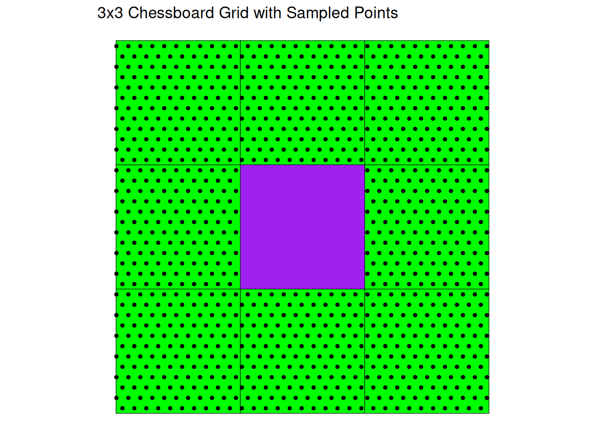

In this file I am going to present my solutions for the Vector Deepdive exercise.
Task 1
Download the datasets swissTLM3D and swissboundaries3d from swisstopo. Using swissTLM3d and swissboundaries3d, calculate the percentage of area covered by forest per canton. Visualize the results (in a map and / or a plot).
Setting Up the Environment for the Forest Area Analysis
In this first step, I prepare the R environment for a spatial analysis of forest areas in Switzerland.
I begin by loading the required libraries. The sf package is used for working with spatial vector data (simple features), dplyr supports data manipulation and transformation, ggplot2 is used for visualization, and tictoc allows me to measure the runtime of the workflow.
Next, I define the path to my geospatial data directory. This ensures that all datasets can be accessed consistently throughout the analysis without repeatedly specifying long file paths. The exact location is a technical detail; what matters is that the data folder is clearly defined at the beginning of the script.
I then start a timer using tic(). This allows me to measure how long the complete forest area analysis takes to execute. At the end of the workflow, I will stop the timer and print the total runtime.
Finally, I construct the file paths to the two key datasets:
SWISSTLM3D, which contains detailed land cover information, including forest polygons.
swissBOUNDARIES3D, which contains administrative boundaries such as the Swiss cantons.
With this, the environment is fully prepared.
Reading and Inspecting the Spatial Data
In this step, I load the spatial datasets into R using the sf package. The st_read() function reads specific layers from the GeoPackage files.
I import:
The land cover dataset, which contains detailed information about different surface types (including forests).
The canton boundaries dataset, which contains the administrative polygons for the Swiss cantons.
Because GeoPackages can contain multiple layers, I explicitly specify the layer names to ensure, that I load the correct data.
After loading the datasets, I inspect their structure by checking the column names. This is an important exploratory step: it allows me to identify relevant attributes, such as the variable that classifies land cover types (e.g., forest) and the variable that stores canton names.
Extracting Forest Areas and Assigning Them to Cantons
In this step, I focus on isolating the forest areas from the full land cover dataset. Using a filtering operation, I select only those polygons that are classified as forest (“Wald”). This reduces the dataset to the features that are relevant for the analysis.
Next, I perform a spatial intersection between the forest polygons and the canton boundaries. This operation overlays both datasets and splits the forest polygons along canton borders. As a result, each forest fragment is assigned to the canton in which it is located.
# Keep only forest polygonsforest <- landcover %>%filter(objektart =="Wald")# Intersect forest with canton boundariesforest_in_canton <-st_intersection(forest, cantons)
Calculating Forest Area per Canton
In this step, I quantify the forest area and prepare the data for analysis and visualization.
First, I calculate the area of each forest fragment resulting from the spatial intersection. Since the data are stored in a projected coordinate reference system (LV95), the area is returned in square meters. I convert these values to square kilometers for easier interpretation. After computing the area, I remove the forest geometry because I no longer need the individual forest polygons—only their numeric area values.
Next, I aggregate the data by canton. By grouping the table according to the canton name, I sum all forest fragments within each canton. This results in a table containing one row per canton and the corresponding total forest area in square kilometers.
Finally, I join these aggregated forest area values back to the canton polygons. This step enriches the canton dataset with a new variable representing total forest area. I then calculate two additional metrics:
The total area of each canton (in square kilometers), computed from the canton geometry.
The percentage of each canton covered by forest, derived by dividing forest area by total canton area and multiplying by 100.
At this point, the canton dataset contains both the geometry and all relevant forest statistics, making it ready for mapping and further analysis.
# Convert forest area to km² and remove forest geometryforest_table <- forest_in_canton %>%mutate(forest_area_km2 =as.numeric(st_area(.)) /1e6) %>%st_set_geometry(NULL)# Sum forest area by cantonforest_area_per_canton <- forest_table %>%group_by(name) %>%summarise(total_forest_area_km2 =sum(forest_area_km2, na.rm =TRUE))# Join to canton polygonscantons <- cantons %>%left_join(forest_area_per_canton, by ="name") %>%mutate(canton_area_km2 =as.numeric(st_area(.)) /1e6,forest_pct =100* total_forest_area_km2 / canton_area_km2 )
Measuring Runtime
At this point, I stop the timer to measure how long the full data preparation and spatial processing took. The timing does not include the plotting steps, as the focus here is on evaluating the computational cost of the spatial operations (such as the intersection and area calculations).
In this step, I create a choropleth map that visualizes the percentage of forest area per canton. Instead of using a continuous color scale, I deliberately apply a binned (classified) color scale using scale_fill_stepsn().
A continuous gradient can sometimes be difficult to interpret in choropleth maps because small differences in color intensity are hard to distinguish spatially. By using a binned approach, the values are grouped into clearly defined intervals. This makes it easier to visually compare cantons by class rather than by subtle tonal differences.
The breaks define the class boundaries (e.g., 0–20%, 20–30%, etc.), and each class is represented by a distinct shade of green. The monochromatic green palette was chosen to align thematically with the concept of forest cover.
In the next step, I create an additional horizontal bar chart that displays the exact percentage values for each canton. Because this second plot provides precise numerical information, the map does not need to maximize interpretational precision. Instead, I prioritize visual coherence and thematic clarity.
If the bar chart were not included, I would likely choose a multi-color continuous scale to improve interpretability directly within the map. However, since the exact values are shown separately, I opted for a visually pleasant, thematically consistent green classification for the choropleth.
ggplot(cantons) +geom_sf(aes(fill = forest_pct), color ="grey40", size =0.2) +scale_fill_stepsn(colours =c("white", "#74c476", "#238b45", "#00441b"),breaks =c(20, 30, 40),limits =c(0, 100),labels =c("20%", "30%", "40%"),name ="Forest cover (%)" ) +theme_void() +theme(legend.position ="right",plot.title =element_text(size =18, face ="bold", hjust =0.5) ) +labs(title ="Percentage of Canton Covered by Forest" )
Creating a Horizontal Bar Chart of Forest Cover
In this step, I create a horizontal bar chart to display the exact percentage of forest area per canton.
First, I remove the geometry from the canton dataset, since a bar chart only requires attribute data. I then select the relevant variables (canton name and forest percentage) and sort the data by forest cover. Ordering the data ensures that the bars are displayed in a meaningful sequence, which improves readability and comparison.
I chose a horizontal bar chart because it is generally recommended when working with longer category labels. Canton names can take up considerable space, and horizontal orientation prevents label overlap while keeping the layout clean and legible.
To make the values easy to compare, I directly annotate each bar with its percentage. By placing the numeric labels inside the bars, readers can immediately see the exact values without needing to estimate them from an axis scale. Because of this direct annotation, the x-axis numbers would only provide redundant information and potentially clutter the visualization. Therefore, I remove the x-axis labels and ticks.
I also omit axis titles, as the plot title clearly communicates what is being shown, and the values inside the bars make the unit of measurement obvious. The result is a clean and focused visualization that complements the choropleth map by providing precise numerical detail.
bar_data <- cantons %>%st_set_geometry(NULL) %>%select(name, forest_pct) %>%arrange(forest_pct)# Plotggplot(bar_data, aes(x =reorder(name, forest_pct), y = forest_pct)) +geom_col(fill ="darkgreen") +geom_text(aes(label =paste0(round(forest_pct, 1), "%")), hjust =1.05, color ="white", size =3.5) +# labels inside barscoord_flip() +labs(x ="", y ="", title ="Percentage of Forest Area per Canton") +theme_minimal() +theme(axis.text.x =element_blank(), # remove bottom axis numbersaxis.ticks.x =element_blank(),axis.text.y =element_text(size =14, margin =margin(r =5)), # larger canton names, closer to barsplot.title =element_text(size =18, face ="bold", hjust =0.5, vjust =0.1) # bigger, centered title )
Task 2
We have prepared a duckdb database on moodle (wald-kantone.duckdb). This database contains two layers: The forest data from swissTLM3D and the canton boundaries from swissBOUNDARIES3D.
Use this dataset and with the help of DuckDB in practice, recreate Task 1 and measure the execution time using the R package tictoc.
Compare the execution time with Task 1. Discuss!
Setting Up the Database Connection
In this step, I connect to the provided DuckDB database (wald-kantone.duckdb), where the forest (wald) and canton (kantone) data is stored. I also load the spatial extension so I can perform geometric operations like intersections and area calculations. With this, the database is ready for analysis.
library(duckdb)
Loading required package: DBI
con <-dbConnect(duckdb(),dbdir="wald-kantone.duckdb",read_only =FALSE)dbExecute(con, "INSTALL spatial;")
[1] 0
dbExecute(con, "LOAD spatial;")
[1] 0
Measuring the Forest Area per Canton
I start a timer to measure how long the forest area calculation takes. Then, I compute the area of forest within each canton and store the result as a view in the database. This step performs the spatial join between forests and cantons and aggregates the forest area by canton.
# Start timingtic("Forest fraction calculation task 2") # Compute forest area per cantondbExecute(con, "CREATE OR REPLACE VIEW forest_area_per_canton ASSELECT k.name AS canton_name, SUM(ST_Area(ST_Intersection(w.geom, k.geom))) AS forest_areaFROM wald wJOIN kantone kON ST_Intersects(w.geom, k.geom)GROUP BY k.name;")
[1] 0
Calculating Forest Fraction
Next, I calculate the fraction of each canton that is covered by forest. I join the forest area with the canton polygons, compute each canton’s total area, and calculate the forest fraction as a percentage. The results are stored in a new view and ordered by the highest forest coverage.
# Compute fraction of canton area covered by forestdbExecute(con, "CREATE OR REPLACE VIEW canton_forest_fraction ASSELECT k.name AS canton_name, f.forest_area, ST_Area(k.geom) AS canton_area, f.forest_area / ST_Area(k.geom) *100 AS forest_fractionFROM kantone kLEFT JOIN forest_area_per_canton fON k.name = f.canton_nameORDER BY forest_fraction DESC;")
After the heavy computation is complete, I stop the timer to see how long the forest fraction calculation took. Compared to when I did the same exercise in R using the sf package (see above), the DuckDB approach is significantly faster.
With sf, performing the spatial intersections and area calculations directly in R required loading all geometries into memory and computing each intersection in R, which quickly became slow for large datasets. In contrast, DuckDB handles the spatial join and aggregation inside the database engine. As a result, the same calculation completes much more efficiently, even on a standard laptop, while the sf workflow can take several minutes or longer for large datasets.
This shows the advantage of doing spatial operations in a database: I can process large amounts of data without transferring all geometries into R, saving both memory and computation time.
Inspecting the Results
Finally, I inspect the first few rows of the forest fraction results to see the cantons with the highest forest coverage. This allows me to quickly verify that the calculations make sense.
# Inspect resultdbGetQuery(con, "SELECT * FROM canton_forest_fraction;")
Once I have completed the analysis and inspected the results, I disconnect from the DuckDB database. This closes the connection and ensures that all resources are properly released. Shutting down the database also guarantees that any temporary tables or views are cleared from memory.
Disconnecting is a good habit to prevent leaving open connections, especially when working with large datasets or multiple projects, if you do not do this, you might run into errors later.
# DisconnectdbDisconnect(con, shutdown =TRUE)
Task 3
Without consulting external help, try and specify the DE-9IM string for the queen and bishop’s case as shown in Figure 1.
Concentrate on the boundary-boundary intersection. Note:
No intersection: F Point intersection: 0 Line intersetion: 1 Any intersection: * The 3x3 “chessboard” is available on moodle.
Loading the chessboard Dataset
First I downloaded the file from moodle. Then I loaded the .gpkg file into r. I had to assign a dummy CRS, so i could perform a spatial analysis later.
# Read the original and destination gridsgrid_orig <-st_read("chessboard.gpkg", layer ="grid_orig")
Reading layer `grid_orig' from data source
`/home/rhoumyas/Documents/ADLS/HS26/spatio-temp-ds/vector-deepdive/chessboard.gpkg'
using driver `GPKG'
Simple feature collection with 1 feature and 0 fields
Geometry type: POLYGON
Dimension: XY
Bounding box: xmin: 0.3333333 ymin: 0.3333333 xmax: 0.6666667 ymax: 0.6666667
Projected CRS: Undefined Cartesian SRS with unknown unit
Reading layer `grid_dest' from data source
`/home/rhoumyas/Documents/ADLS/HS26/spatio-temp-ds/vector-deepdive/chessboard.gpkg'
using driver `GPKG'
Simple feature collection with 8 features and 0 fields
Geometry type: POLYGON
Dimension: XY
Bounding box: xmin: 0 ymin: 0 xmax: 1 ymax: 1
Projected CRS: Undefined Cartesian SRS with unknown unit
# Assign a dummy CRS (same for both layers)st_crs(grid_orig) <-2056
Warning: st_crs<- : replacing crs does not reproject data; use st_transform for
that
st_crs(grid_dest) <-2056
Warning: st_crs<- : replacing crs does not reproject data; use st_transform for
that
The King/Queen case
The king or queen on a chessboard can move in any direction from a starting square. therefore, I needed a way to select all squares that touch a given square, including both orthogonal (edge-sharing) and diagonal (corner-sharing) neighbors. In DE-9IM, the eighth position of the 9-character pattern corresponds to the intersection between the exterior of the first polygon and the boundary of the second polygon. By setting this position to 1, I specifically capture all polygons whose boundaries touch the exterior of the center square. For this task this resulted in the following string: F******1*.
# Define a rook adjacency functionst_queen_king <-function(x, y) st_relate(x, y, pattern ="F******1*")# Select neighbor polygons and sample points (hexagonal)grid_qk <- grid_dest[grid_orig, , op = st_queen_king] |>st_sample(1000, type ="hexagonal", by_polygon =TRUE)# Plot the destination grid and the sampled pointsggplot() +geom_sf(data = grid_dest, fill ="green", color ="black") +geom_sf(data = grid_qk, color ="black", size =1) +geom_sf(data = grid_orig, fill ="purple")+ggtitle("3x3 Chessboard Grid with Sampled Points") +theme_void()

The Bishop case
A bishop on a chessboard can only move diagonally from a starting square, so I needed a way to select only the squares that touch the center at a corner, excluding those that share an edge. In DE-9IM, the fourth position of the 9-character pattern corresponds to the intersection between the boundary of the first polygon and the interior of the second polygon. By setting this position to 0, I specifically capture polygons that touch the center square only at a single point, the corners, while ignoring orthogonal neighbors. For this task, this resulted in the following string: F***0****.
# Define a rook adjacency functionst_bishop <-function(x, y) st_relate(x, y, pattern ="F***0****")# Select neighbor polygons and sample points (hexagonal)grid_bishop <- grid_dest[grid_orig, , op = st_bishop] |>st_sample(1000, type ="hexagonal", by_polygon =TRUE)# Plot the destination grid and the sampled pointsggplot() +geom_sf(data = grid_dest, fill ="green", color ="black") +geom_sf(data = grid_bishop, color ="black", size =1) +geom_sf(data = grid_orig, fill ="purple")+ggtitle("3x3 Chessboard Grid with Sampled Points") +theme_void()